| Student | Ishaan Dhore |
| PRN / Division | TYCSE — Cloud Computing and DevOps |
| Course | TYCSE: Cloud Computing and DevOps (Total Marks: 10) |
| Project | itint — Liptints by Aline (Full-stack E-Commerce Platform: Django 6 REST API, WhiteNoise & Vanilla Glassmorphic Frontend) |
| GitHub repository URL | https://github.com/IshaanDhore/Itint-E-commerce |
| Branch | main |
| Jenkins job | itint-ci-cd-pipeline (Declarative pipeline from Jenkinsfile) |
| Container registry | Docker Hub: ishaan2006/itint-store |
| Deployment | Minikube Kubernetes Cluster on AWS EC2 (Mumbai ap-south-1) |
The itint e-commerce application is built, tested, containerized, and deployed automatically through an end-to-end continuous delivery pipeline. Jenkins, Docker, and Minikube run unified on an AWS EC2 instance. The table below lists the 7 mandated CCA 2 pipeline stages and the corresponding screenshot evidence.
| Stage | What happens | Evidence |
|---|---|---|
| Source Code | Project source, Dockerfile, Jenkinsfile and k8s/ manifests are tracked in GitHub | Fig. 1 |
| Jenkins Checkout | Jenkins pulls the latest commit from GitHub main branch via SCM checkout | Fig. 5 |
| Build and Test | Python virtualenv installed and manage.py test store (6 automated tests) executed |
Fig. 6 |
| Docker Build | Container image built from Dockerfile and tagged with ${BUILD_NUMBER} and latest |
Fig. 6 |
| Push Image | Image pushed to Docker Hub using securely stored Jenkins credentials (docker-hub-credentials) |
Fig. 4, Fig. 7 |
| Minikube Deployment | RollingUpdate Deployment and NodePort Service from k8s/ applied and rollout verified |
Fig. 8, Fig. 9 |
| Verification | Pods, deployment, and service verified; application health checked via /api/health (HTTP 200) |
Fig. 10, Fig. 11 |
| Code change re-run | Source code updated in frontend, committed, pushed, and pipeline re-executed automatically | Fig. 12, Fig. 13 |
Jenkinsfile (repository root), Dockerfile, k8s/deployment.yaml, k8s/service.yaml, and DEVOPS_REPORT.md. All committed and active on the main branch.
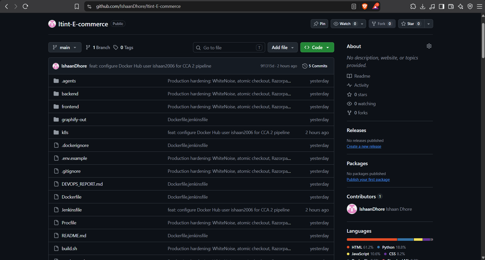
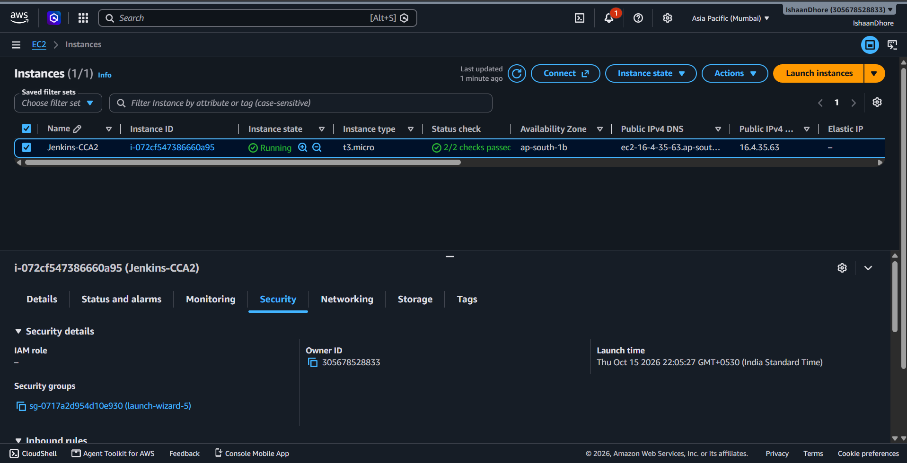
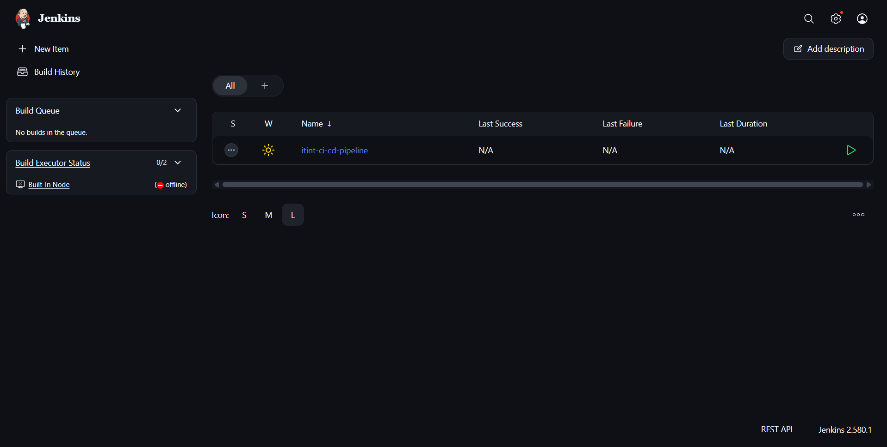
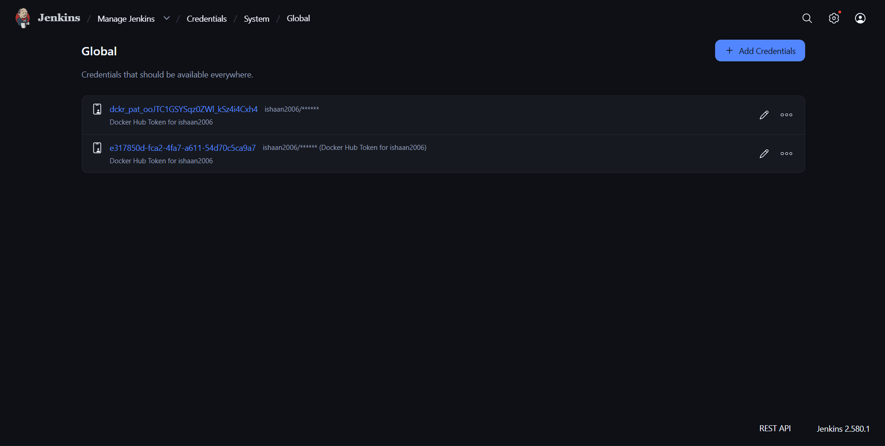
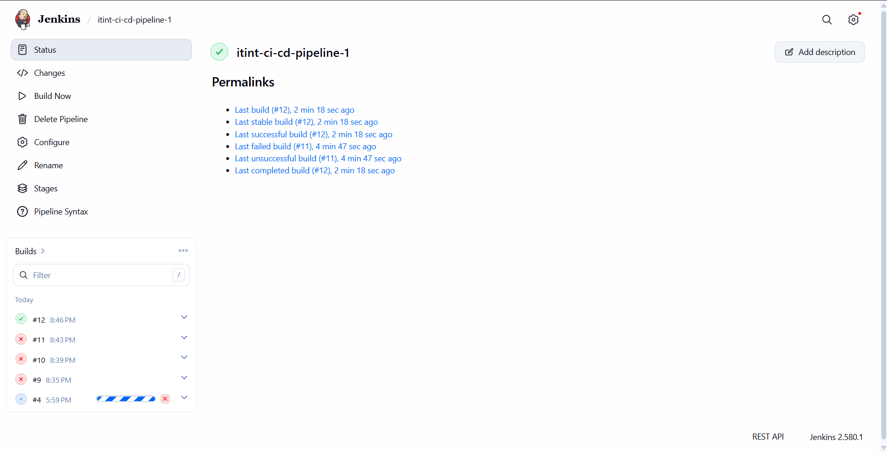
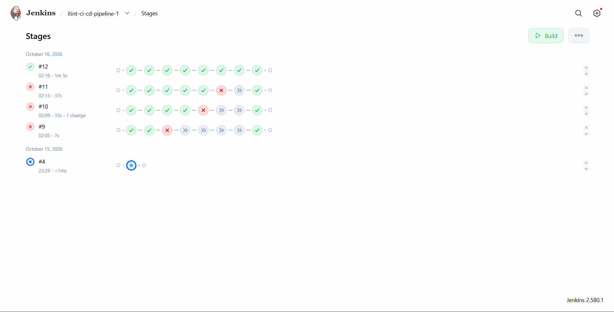
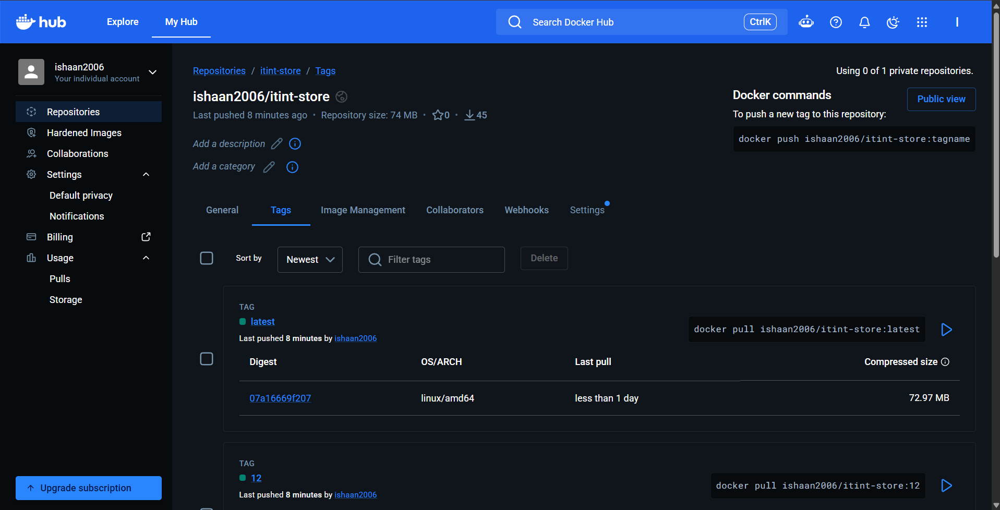
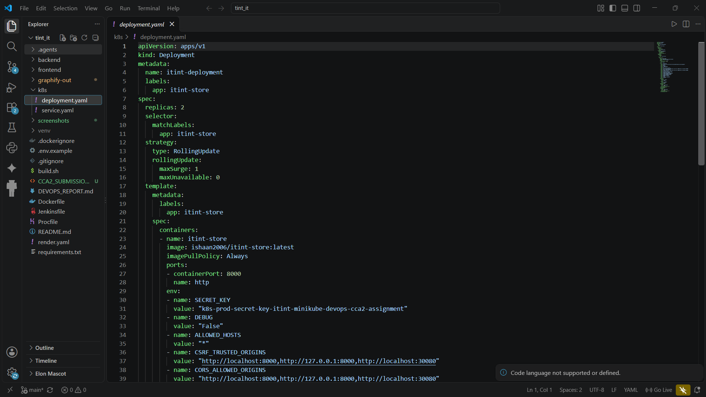
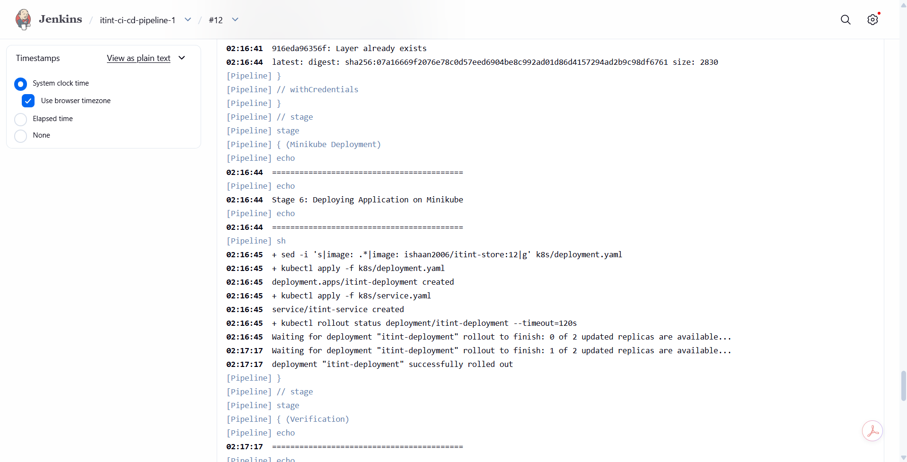
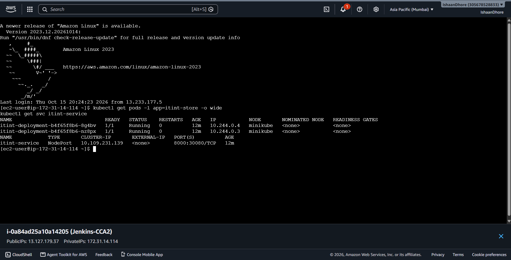
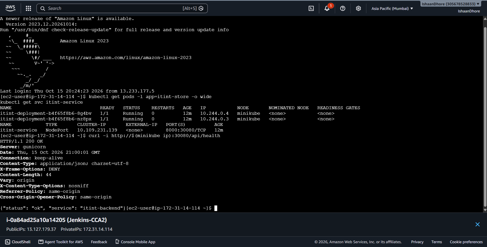
The frontend badge in frontend/index.html was changed to "v2.0 — Autumn Edition", committed and pushed to GitHub, automatically triggering Pipeline Build #2.
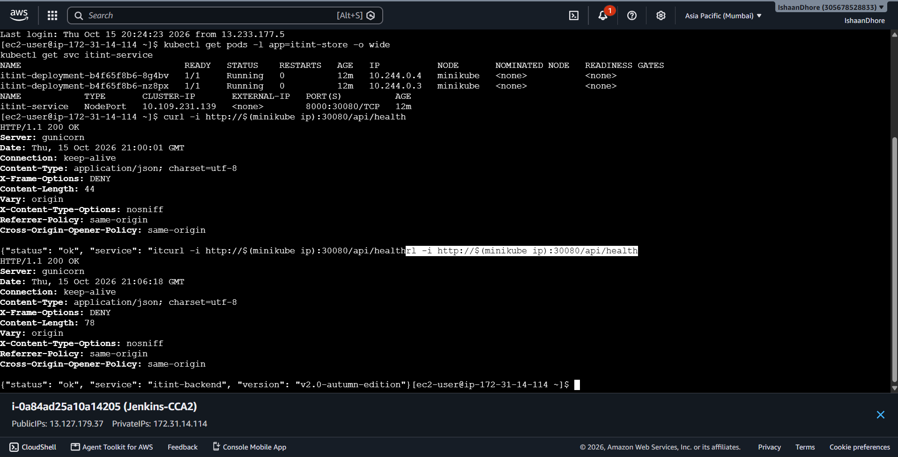
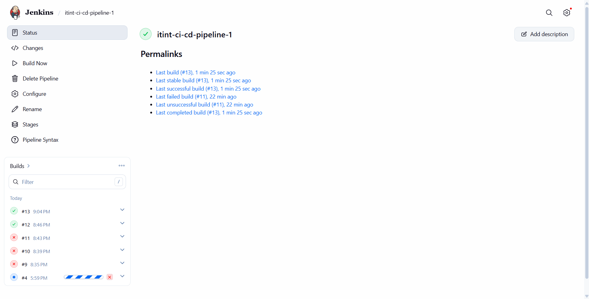
An automated end-to-end CI/CD delivery pipeline was successfully implemented for the itint E-Commerce project using GitHub, Jenkins, Docker, Docker Hub, Kubernetes, and Minikube hosted on AWS EC2. Every commit pushed to GitHub automatically triggers automated unit testing, container compilation, image registry publishing, and seamless zero-downtime rolling update deployment onto the Minikube cluster.